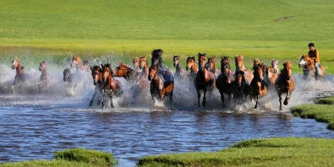
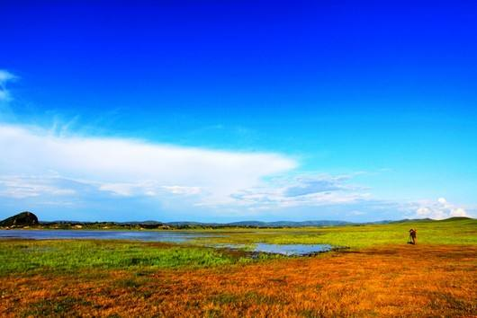

泡子，就是“湖”的意思，将军泡子指的是当年康熙皇帝亲征，击溃漠西葛尔丹叛军的地方。将军泡子位于位于内蒙古克什克腾旗最南端，由于这里的水面开阔，四面环山，更以其迷人的欧式草原风光，逐渐成为摄影爱好者拍摄日出和日落的圣地。这里属丘陵与平原交错地带，森林和草原有机结合，既具有南方的优雅秀丽，又又不失北方的阳刚之气。来到这里，仿佛来到另一个世界，让人不禁沉浸在美丽的景色中
影视家称这里是露天影棚。据不完全统计，近10年，在这里摄制了60余部影视剧。其中《还珠格格》、《康熙王朝》、《射雕英雄传》、《汉武大帝》、《三国演义》等10余部大片的大部分场景都是在这里拍摄的。 这里你可以跃马草原感受驰骋疆场的快感，还可以做一次草原汉子，只识弯弓射大雕，骑一骑四轮摩托，驰骋在草原，感受自然的力量。最值得一提的是在这里还可以体验到急速滑行，尘土飞扬的快感，这里有一个大型的滑沙场，经常吸引众多的游客前来尝试。
这里的水面开阔，四面环山，中的芦苇长得一丛丛的，而且还错落有致。每天下六点多钟时，会有一大群马飞奔到湖边来喝水，景色美的像油画一样。夜幕降临，在泡子边的蒙古包里住一晚，围坐在篝火旁欣赏马头琴弹奏的蒙古长调。夜深，枕边细细体味寂静草原之夜浪漫情趣。清晨早起呼吸草原清新空气，让阳光尽情洒在身上。